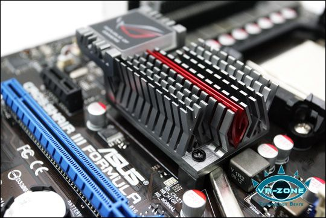
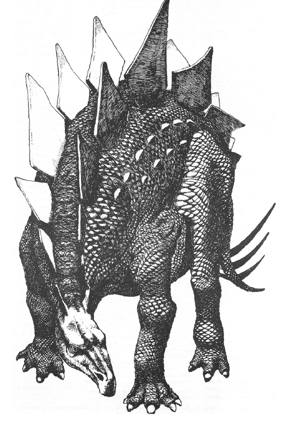
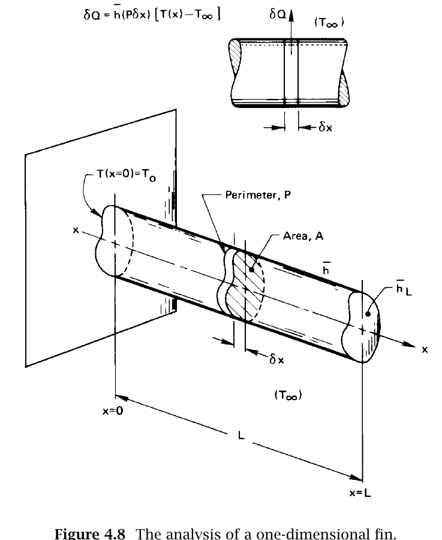

Fin Design: From A Finite Rod To An Infinite Rod¶
This reference develops Lienhard and Lienhard Section 4.5, textbook pp. 163-173. It collects Eqs. (4.27)-(4.51) in one place so you can follow the logic from a physical fin to the finite-length and infinite-length rod models used in Module 8.
How To Use This Reference¶
Read this page alongside Lienhard Section 4.5 for A4. The Module 8 workload budget includes 150 minutes total for reading the module, the textbook section, and this guide. This page is not a separate submission and should not be copied into another report.
Annotate the derivation with three questions in mind:
- Which term comes from Fourier conduction along the rod?
- Which term comes from Newton cooling through the rod's side?
- Which boundary condition distinguishes the finite insulated-tip solution from the semi-infinite solution?
What A Fin Does¶
A fin conducts heat along a solid while exchanging heat with the surrounding fluid through its surface. Increasing surface area can greatly increase heat transfer.

Examples used in the historical Phys 39 course: extended metal surfaces increase the area available for heat transfer.

Lienhard and Lienhard, Fig. 4.7, textbook p. 165: a speculative biological example of cooling fins.
Geometry And The One-Dimensional Assumption¶

Lienhard and Lienhard, Fig. 4.8, textbook p. 166: a fin of length \(L\), cross-sectional area \(A\), perimeter \(P\), conductivity \(k\), side coefficient \(h\), and tip coefficient \(h_L\).
The transverse Biot number must be small:
For a circular rod, \(A/P=R/2\). This criterion allows us to use one cross-sectional temperature \(T(x)\).
Energy Balance And Differential Equation¶
An energy balance on a slice of width \(\delta x\) is
As \(\delta x\rightarrow0\),
Therefore,
For a convecting tip,
For an insulated tip,
Dimensional Form¶
The dimensional functional relation is
Define
Then a convecting-tip fin has
whereas an adiabatic-tip fin has
The differential equation becomes
Its general solution is
Finite Rod With An Insulated Tip¶
The dimensionless boundary conditions are
Substitution into the general solution gives
The hyperbolic functions used to simplify the result are
Their needed derivatives are
The constants are
The finite insulated-tip temperature distribution is
The heat-transfer rate at the base is
Thus,
or
At the tip,
Exact Convecting-Tip Solution¶
The dimensionless boundary conditions become
Substitution into the general solution gives
The exact temperature distribution is
The corresponding base heat rate is
Infinite-Rod Limit¶
When \(mL\gg1\), the finite solution approaches
The base heat rate becomes
Lienhard recommends \(mL\gtrsim5\) when using the infinite-fin approximation for temperature and \(mL\gtrsim3\) when using it for the base heat rate. In Module 8 you will calculate the actual finite-versus-infinite error at every sensor rather than relying only on these general thresholds.
What To Be Able To Explain¶
- Why does Eq. (4.27) concern the radius, whereas \(mL\) concerns the length?
- Which term in Eq. (4.28) represents side heat loss?
- What physical assumption changes Eq. (4.31a) into Eq. (4.31b)?
- How does Eq. (4.41) retain information about the far end?
- Why is Eq. (4.50) an approximation rather than a new physical law?
- Starting from Eq. (4.28), derive Eq. (4.30) and check every term's units.
- Starting from the general solution, use the base and insulated-tip boundary conditions to obtain Eq. (4.41).
- Show mathematically how Eq. (4.41) approaches Eq. (4.50) when the far end becomes irrelevant.
These are assessed in the A4 written derivation and may be sampled in the C5 oral check. Understanding the derivation matters more than reproducing a long sequence of algebra from memory.